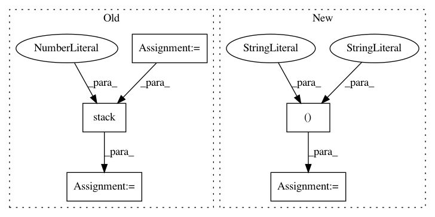

be3f3039c92721bb54de1a7eda210a87f19da67d,snake/solver/dqn.py,DQNSolver,__build_net,#DQNSolver#,45
Before Change
self.__q_nxt_all = __build_layers(self.__state_nxt, "target_net", w_init, b_init)
with tf.variable_scope("q_target"):
max_actions = tf.argmax(self.__q_eval_all, axis=1, output_type=tf.int32, name="max_actions")
action_indices = tf.stack([indices, max_actions], axis=1)
// Shape: (None, )
q_target = self.__reward + self.__gamma * \
tf.gather_nd(self.__q_nxt_all, action_indices, name="gather_nd")
self.__q_target = tf.stop_gradient(q_target)
with tf.variable_scope("loss"):
self.__loss = tf.reduce_mean(tf.squared_difference(
After Change
self.__q_target = tf.placeholder(
tf.float32, [None, ], name="q_target")
scope_eval, scope_target = "eval_net", "target_net"
w_init = tf.random_normal_initializer(mean=0, stddev=0.3)
b_init = tf.constant_initializer(0.1)
// Eval net output / Shape: (None, num_actions)
In pattern: SUPERPATTERN
Frequency: 3
Non-data size: 5
Instances
Project Name: chuyangliu/snake
Commit Name: be3f3039c92721bb54de1a7eda210a87f19da67d
Time: 2018-01-05
Author: chuyang.s.liu@gmail.com
File Name: snake/solver/dqn.py
Class Name: DQNSolver
Method Name: __build_net
Project Name: tensorflow/models
Commit Name: f7b4c6de2037ebedf6bc8ea5979e81666d54534f
Time: 2020-12-01
Author: rathodv@google.com
File Name: research/object_detection/meta_architectures/center_net_meta_arch.py
Class Name:
Method Name: convert_strided_predictions_to_normalized_boxes
Project Name: fgnt/pb_bss
Commit Name: 2cfa9aa576ae7544f76e66854edd304690a5822b
Time: 2019-08-08
Author: mail@lukas-drude.de
File Name: paderbox/speech_enhancement/beamformer_wrapper.py
Class Name:
Method Name: get_multi_source_bf_vector_from_masks